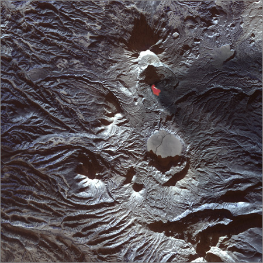
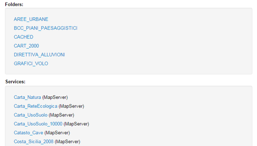
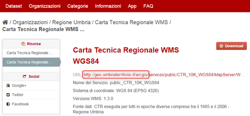
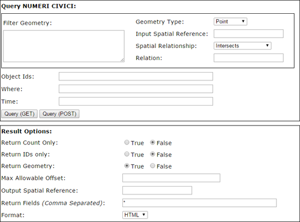
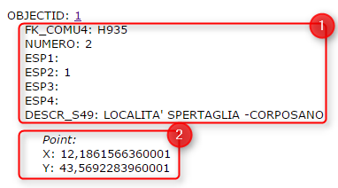
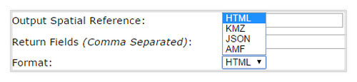
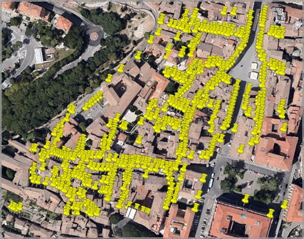

Some years ago I was working for my company together with my colleagues Andrea and Fabio. That was one of the rare times we had some money to use to integrate our equipment. We work in GIS, mostly web-mapping and numeric cartography, and at that time we were lucky people with new graphic workstations, a small sized but new brand server farm and all we needed to do our job at the best. We had just completed a project related to some environmental issues and one of the problems we collided with was the lack of geodata at the scale we were looking for. At that time, public Italian geographic data, especially those referred to the region where we live and operate, were not so easily available nor frequently updated. This is a well known problem for people working with GI so Fabio told us “Why don’t we buy a small airship to collect our own information?”
Starting from this moment we spent about one month looking for the right aircraft.
At the beginning we had rough and confused ideas of what to do. Obvious constraints were: affordability, reliability and ease of use. But we were also looking for GPS control, flight planning and everything could be connected with mapping. With our surprise we easily found a number of carriers (not only airships but also planes, helicopters, paragliders, multi-copters and so on). Some solutions were of industrial type, other substantially homemade but we were looking also for a partner, someone who could help us to start and this item became part of our “requirements list”. We also found that our budget allowed to buy more than one aircraft so we decided to concentrate on two different kinds of vehicles: a paraglider to be used in photogrammetric surveys of large areas and a small quadricopter which we planned to employ on smaller areas. In those weeks we also found Daniele, a colleague and a friend that introduced us to aerial mapping with small, Remotely Piloted Aircrafts.
What sRPA are
RPA means Remotely Piloted Aircraft. An “s” at the beginning stands for small.
Remote control implies that the pilot is not sitting on-board but generally remains on the ground surface, controlling the flight using a radio device.There are a number of equivalent ways to call this kind of aircrafts. Probably the most common are UAV (Unmanned Aerial Vehicles) and drone (even if this last term originally indicated military targets1). Other diffused English abbreviations are UAS (Unmanned Aerial Systems), RPV (Remotely Piloted Vehicles), ROA (Remotely Operated Aircrafts). In Italy, ENAC2 recently introduced the acronym APR (Aeromobile a Pilotaggio Remoto).
Since remote control is a base characteristic to define an RPA, there are a lot of crafts kinds falling in this category. Beside obvious differences (such as those between fixed and rotary wings) other important parameters to take in account are: size, weight, range, maximum altitude and endurance. These last parameters are those commonly used to classify unmanned aircrafts. The table below illustrates an old classification of the UAV Association that uses the above mentioned parameters to define classes and, even if not the most updated, can be used as guide.
| Class | Abbr. | Range (km) |
Altit. (m) |
End. (h) |
Mass (kg) |
| Micro | µ | < 10 | 250 | 1 | <5 |
| Mini | Mini | < 10 | 150 to 300 | < 2 | 150 |
| Close Range | CR | 10 to 30 | 3000 | 2 to 4 | 150 |
| Short Range | SR | 30 to 70 | 3000 | 3 to 6 | 200 |
| Medium Range | MR | 70 to 200 | 5000 | 6 to 10 | 1250 |
| Medium Range Endurance | MRE | > 500 | 8000 | 10 to 18 | 1250 |
| Low Altitude Deep Penetration |
LADP | > 250 | 50 to 9000 | 0.5 to 1 | 350 |
| Low Altitude Long Endurance |
LALE | > 500 | 3000 | >24 | < 30 |
| Medium Altitude Long Endurance |
MALE | > 500 | 14000 | 24 to 48 | 1500 |
Small RPA are those falling within the micro and mini classes. If you look at the table, you easily understand why they are so attractive for professionals and SMEs working on mapping of small areas (up to tens of hectares). They are often so lightweight and small that you can carry them in the back of your car, but they can fly high and far enough to be employed to work. Furthermore they are enough safe. For instance: most of the small RPA are equipped with electric engines, which means that there is no fuel flying over your heads. Some RPA, such as multicopters, are VTOL (Vertical Take Off and Landing) aircrafts so they don’t need runways and can start to fly from very small surfaces.
On the other hand, it’s important to notice that these objects have specific limitations that you must never forget. You should never fly over people or lose the sight of your drone. Wind, obstacles (such as electric cables or poles), electromagnetic interferences are enemies. You should also remember that, even if most of these objects are smaller and lighter than models and ultralight crafts, when you use them to work they are considered in all respects aircrafts.
I’m not an engineer, so I cannot deepen into technical issues but there are few important tech notions that you must have in mind if you want to deal with small drones. The most relevant are those related to some subsystems that are barely common to every UAV: GPS, IMU, communication and guide systems.
GPS measures the drone position during the flight. Some small drones also use the GPS for safety issues. For example, if you lose the radio contact with him, the drone can use the GPS to maintain its position until communication is restored.
IMU stands for Inertial Measurement Unit. An IMU is an electronic system that, using accelerometers and gyroscopes, measures speed and attitude of the aircraft during the flight. All the information you receive about the yaw, pitch and roll angles of your UAV came from its IMU.
From left to right: Yaw, Pitch and Roll angles. These angles define the aircraft attitude and information about them is provided by IMU.
This information reaches you thanks to a communication system that continuously transmits flight data to the ground. Generally these data are received by a ground base station and displayed along with other telemetry data3 using a software application.
Since you need to pilot the aircraft, communication between you and your drone is always bidirectional. The drone talks with you through telemetry, you talk with him using a radio control. Some small drones are also able to fly autonomously since they are capable to automatically execute planned flights. This last characteristic is an essential requirement if you want use them for mapping purposes.
Application to civil purposes
RPA technology has been originally developed for military purposes. This is the reason why the word “drone” often evokes war scenarios. When I did my first web survey to choose which drone to buy, I was impressed by the number of military sites related to drones.
Nevertheless, civil use of UAVs, especially the small ones, is growing. This is essentially due to the reliability achieved by these systems along with their cheapness and ease of use (if compared with conventional manned aircrafts).
Besides the applications in which they are used as point of view4, there are a lot of technical fields where the use of a sRPA is helpful. The table below lists some of them.
| Scientific Applications |
Civil Engineering |
Industry and Utilities |
Public Administration |
Civil Protection |
| Precision Farming | Photographic surveys on buildings, bridges, dams, etc. | Preventive inspection of energy infrastructures | Monitoring of construction and mining abuses | Emergency monitoring |
| Archaeology | 2D and 3D modeling | Monitoring of utilities infrastructures | Illegal dumping monitoring | Prevention of critical events |
| Geology | Energy performance of buildings | Monitoring of construction sites and public works | ||
| Environmental Studies | Documentation |
In all these fields, your drone is not simply an eye in the sky but can be used to collect measures. If you use a camera as payload, you can collect the right number of images to realize a photogrammetric survey. If you change the camera with a multispectral device you can collect Remote Sensing data. You could also use active sensors, such as LIDAR, but due to the low load capacity of small UAVs (typically ranging between 0.2 and 5 kg) and high power requirements, is not so easy to find the right payload.
Geomatics
Spatial information is a pervasive content and geomatics entered in different ways in most of the aspects of our life. With reference to the technical use of small drones, geomatics is both a way and a scope.
As I said before, flight plans are important if you want to retrieve data for mapping (e.g. photogrammetric data) and spatial tools can be efficiently integrated in flight plan design process. This happens because flight plans are based on carrier (and target) position, so all the details of the flight plan (route, acquisition points, etc.) can be correctly set or calculated starting from a GIS environment. Better: the whole planning process could be confined within a dedicated geospatial platform. Even better: geospatial applications represent the right environment to display and analyze most of the data you have collected.
Since when you plan a flight is because you have some goal, this goal shapes planning activities. If I want to measure the concentrations of some chemical compounds, probably I just need to define flight route and altitude. If I want to realize a photogrammetric survey, my needs will extend to camera parameters or images overlap and sidelap.
When you define Overlap and Sidelap of a flight plan you are setting the front and side superposition of frames.
These examples are not randomly chosen, because both can lead to mapping:
- spatialized chemical measurements easily lead to thematic mapping,
- photogrammetric survey can be used to generate orthophotos.
It is important to know that not all the drones allow automatic flights and not all the drones allow the same degree of automation. For example, our quadricopter is a very sophisticated tool that permit to define all the flight details (takeoff and landing points, route, trigger points or trigger frequency, camera zoom, camera pitch and roll angles and so on). On the other hand, our paraglider just allows to define 12 waypoints and we are forced to manually trigger the camera (is up to you to decide which is my favourite …).
Geomatics & Photogrammetry
Photogrammetry is probably the most diffuse technique used in combination with small drones.
In my experience, the photogrammetric approach is a swiss knife for a number of application fields. You can use variations of the same basic techniques to realize metric images and 3D models of the ground surface, models of buildings, bridges, quarry fronts.
If you want to use aerial photos for mapping purposes, one of the key issues is DSM generation. Digital Surface Models are three-dimensional representation analog to DTM. Differences between them are related to the inclusion (DSM) or exclusion (DTM) in the model of objects, such as buildings, located on the ground surface. Since to produce orthophotos you need to project your images on a model of the ground surface, if you want to employ your aerial pictures to generate orthophotos, you need to pass through a DSM (the good news are that, if you have collected your pictures following the right scheme, you have all the information needed to DSM generation). Once you have processed your images in order to obtain a DSM, there are other things you can do besides generating orthophotos. For instance, you can drape your images onto the model to obtain useful (and also beautiful) photorealistic 3D metric models.
Orthomosaic draped on a DSM. This image refers to an archaeological site in Western Sicily. From Borruso et al. (2011) Atti 15a Conf. Naz. ASITA, pp. 471-478
Models based on image processing can be integrated with those produced with other methods.
For instance, in some applications, coupling low altitude aerial photogrammetry with Laser Scanning, helps to complete high resolution and precision measurements of buildings with those parts (such as roofs) that are inaccessible from the ground.
In some workflows, you could need to integrate satellite data with data acquired with sUAV. This happens because of the higher resolution needed or since clouds mask some part of the satellite image or because you need to record a time series with frequencies not allowed by satellite return time.
Low Altitude Remote Sensing
Aerial images can be considered a special case of use of sUAV in the more general Low Altitude Remote Sensing (LARS) scenario so, even if photogrammetry is probably the most diffuse technique connected with sUAV usage, there is a lot of space for other employments.
Infrared imagery (both near and thermal) are good examples in this direction.
Near Infrared (NIR) is the region of the electromagnetic spectrum falling between 0.75-1.4 µm. A number of objects reflects (i.e. plants chlorophyll) or adsorb (i.e. water) the incoming solar radiation in this region. NIR data can be acquired using dedicated sensors or modifying commercial cameras5 (including compact cameras). Thermal cameras record information in the Thermal Infrared (TIR), mostly between 7–14 µm. These cameras don’t use CCD or CMOS sensors, but a special kind of detector called microbolometer that is capable to identify differences in temperature and, if correctly calibrated, to measure temperature values.
If you combine NIR data with images collected within the visible (VIS) range6, you can use this multispectral dataset for various applications. Precision Farming, Preventive Archaeology, water pipeline monitoring or environmental studies are examples correctly scaled on the operational capabilities of sUAV.
TIR data can be used alone or in association to multispectral information to perform more complex analysis. For instance, you can use a thermal camera mounted on a UAV to measure energy performance of buildings or you can combine thermal and multispectral information to carry out surveys on illegal dumping.
Legal and tech issues
The examples we did since now represent the most common cases of use of sUAV for technical and scientific purposes.
The most natural question that we can do now is: if they are so reliable, quick, flexible and cheap, why sUAV are still relatively uncommon?
There is more than one answer to this question and the most relevant are related to some legal and technical issues.
The first critical issue is the poor definition of a general regulatory frame focused on the UAV use, that disadvantages also the diffusion of small drones. As we said before, these carriers are often lighter and safer than aeromodels or ultralight aircrafts but, even if these crafts can fly in conventional aerial space without limitations, sUAV cannot. This prohibition is related to their use. Roughly: if you do fly something with purposes other than your pleasure, you are doing aerial work and you must be subjected to rules. Most small companies interpreted the lack of rules as an implicit permit and this worked until small drones were unknown objects. This not correspond to the present situation, where an increasing number of potential players has tested the utility of light drones in the generation of services and sUAV increasingly appear on newspapers and TV. Due to this interest national and international authorities are trying to define a frame and a set of rules which recognize the special nature of these crafts.
Circular 328 – Unmanned Aircraft Systems (UAS)7 published on March 2011 by the International Civil Aviation Organization(ICAO), is devoted to inform national authorities about the ICAO perspective on the integration of UAS into non-segregated airspace and to underline the basic differences between manned and unmanned aviation. The circular addresses a wide range of topics (such as collision avoidance, air traffic services, airworthiness and certification, personnel licensing and so on) and aims to provide guiding material for future developments of regulatory frames. The US Federal Aviation Administration (FAA) recognizes that small UAS could “experience the greatest near-term growth in civil and commercial operations because of their versatility and relatively low initial cost and operating expenses”8 but, until now, no rules about commercial use of small drone have been released9.
European countries generally do not allow commercial use of small UAS with the exception of the United Kingdom, where Civil Aviation Authority (CAA) grants some permisions10.
There are also a number of technical issues the first of which is the lack of dedicated sensors. Load capacity of small drones is a hard constraint that limits the employ of professional tools. Even if miniaturization of aeronautical devices is a constant process, most of the active sensors, such as LIDAR, are still too heavy to be mounted on a small drone. For this reason passive sensors, such as optical and thermal cameras, are the most diffused in daily practice. Other kind of tools, like electronic noses, even if already available are relatively rare.
Other topics belonging to this line are connected to future technical development that in a next future will improve the sUAV capabilities. Just to report a list of the most interesting:
- sense and avoid obstacles in autonomous flight
- ability to cooperate in formation flight
- increasing of endurance
- enhancing intelligence on board.
Communities and information
If reading this article has somehow intrigued, perhaps may interest you to know that there are a number of discussion groups centered on sUAS. If you want an access point, I suggest to write one of the RPAsynonyms in the group search of Linkedin.
There also associations focused on UAV. Among the most relevant, is important to cite UVSInternational, a non-profit association which includes unmanned vehicle systems (so, in this case, not only UAV) manufacturers, service companies and researchers. In these months it is also being founded the Associazione Italiana UAS which, as UVS International, is open to the all the players of the UAV chain that operate in Italy.
If you want to find more information on the topics covered in this article there are some specialized web sites that you can refer to. One of my favourite is suasnews.com which provides a daily updated information on UAS world.
Because of the strong relation between drones and geomatics, UAV news appear on various websites focused on spatial topics (try to search for UAV in GeospatialWorld, which also published an interesting review on UAVs).
Relation between UAV and Geomatics have been also the key topic of an international conference which was taken in Zurich in September 2011. The conference title was UAV-g 2011 – Unmanned Aerial Vehicle in Geomatics and here you can access to the proceedings.
___________________
- Thanks to Prof. Caterina Grillo of the University of Palermo for underling me this issue ↩
- ENAC (Ente Nazionale Aviazione Civile) is the Italian authority for civil aviation ↩
- Telemetry should include GPS and IMU data along with information about craft status (battery charge, engine efficiency and so on). ↩
- Intelligence and security, broadcasting, advertising, etc. ↩
- Most of the CMOS sensor are sensitive to the near infrared radiation so, broadly speaking, you just need to remove the IRcut filter to record IR data. ↩
- 0.390 – 0.750 µm ↩
- For a synthesis of ICAO Circular 328 you can see this document: http://goo.gl/aEBDr ↩
- http://goo.gl/kHGYT ↩
- http://goo.gl/HNHa8. In the meanwhile if you give a look to specialized web groups you find polls and discussions with titles like “Just how many people are operating commercial sUAS illegally in the USA?” ↩
- http://goo.gl/VjLDN, see also CAP 722: Unmanned Aircraft System Operations in UK Airspace – Guidance (http://www.caa.co.uk/docs/33/CAP722.pdf) ↩
L'articolo sRPA and Geomatics: why small drones are mapping tools è apparso originariamente su TANTO. Rispettane le condizioni di licenza.
]]>The time was up to try to develop something on Android. In the past I had tried to develop applications on Zaurus, on Dell Axim, on some Nokia smartphone, but the results had been disappointing every time. There had to be something easier, where one could throw his ideas and make simple applications out of it… in one weekend.
The nerdy Sunday, wakeup call at 6, checking emails with coffe’ and cookies, seemed to be inspiring. A couple of days before an email had arrived about a new book, available in “review-reading” mode as pdf version: Unlocking Android, a developer’s guide by Ableson et alter. I decided to give it a possibility.
Well, I found the book so easy to read through, that I gave the first application a try. I really wanted to create a lightweight application that would help out in field surveys and would have those features, that the tablet pc field mapping application didn’t have. Above all the possibility to record the orientation of the pictures taken during the survey, so that they would show the direction of the snapshot when imported on a map. And I really liked the idea of having a mapping device always in my pocket. The motto has always been: “Gather as much information as you can. Always. The GIS will then help you to sort it out.”
That Sunday experiment went way better than I had ever hoped, by the evening I had great satisfaction with my simple, new and most of all GPS logging application. It was already able to take text notes and track lines. I got really excited about the possibilities to create a small version of BeeGIS… well, at that point I knew the time was up for Geopaparazzi.
From that moment on things went quite smooth. We started developing a simple OpenStreetMap based view, we created an import tool for Geopaparazzi in BeeGIS. We were using it in our daily job, and that was simply awesome. As we usually do at HydroloGIS we open sourced the application and published it on the market, in the hope that people would buy it and through that act support our other open source projects: JGrasstools, JGrass, BeeGIS and uDig.
The first Geopaparazzi
The thing we were most proud of, was that it would handle shooting direction:
The compass tracks the picture shooting direction, when the user keeps the phone in "taking picture" mode.
which, once imported into BeeGIS, would result in geonotes containing the picture and showing through a small arrow the direction in which the photo had been taken:
Geopaparazzi survey data imported into BeeGIS. The small arrows show the direction of the snapshot, the note itself contains the image.
As time passes by and as open source software works, one starts to exploit components other teams are specialized in.
So at some point Geopaparazzi decided to remove the compass view to present the much more user friendly dashboard. The android system makes it very easy to call views from other applications. geopaparazzi therefore chose to present a compass button that calls the compass view from the Status GPS project, which is freely available in the market.
The Status GPS compass view
At that point Geopaparazzi 2 was released, which brought a new, more userfriendly dashboard view:
The main view of Geopaparazzi 2
From the beginning Geopaparazzi only wanted to deal with data collection, which is why with the time the possibilities to describe the data to collect were enhanced. The new form based tags were introduces, through which it is possible to describe the data structure as forms that appear as tag buttons:
Once the button is pushed, the form is generated from a user created description:
A form, generated on the fly from a user defined text
Geopaparazzi 2 also brought the integration with the osmdroid project, a project that supplies a map view that caches OSM map tiles that can be accessed also in offline mode. This gave the possibility to enhance a bit the usability of the map view, also adding the bookmarks facility:
The osmdroid based map view, with Geopaparazzi's measure tool, bookmarks and notes tools
That more or less brings us to where we are now. Some interest has grown around Geopaparazzi and that makes us very happy.
The Osaka Water General Service together with the Osaka University has adapted it to use it for the collection of information about water-supply infrastructure to promote post-disaster recovery for water supply under the guidance of Venkatesh Raghavan.
The Japanese localized Geopaparazzi adaption used in the Disaster Management Information System of the city of Osaka
We worked on a customized version of Geopaparazzi to keep waste management information uptodate. Through the trashmapper it is possible to sample and update information out in the field and then syncronize the data with a central database/webgis.
Since in this project the new generation tablets are being used, we got to tweak it for better user experience on tablet screens:
The TrashMapper application that helps collecting data about waste management
Arrived to that point, it was about time to move to the next level. Geopaparazzi has always been a free and open source application. It was sold in the android market but the code has always been accessible. What we want to achieve now that it is a stable product, is to attract some developers to cooperate on the project and enhance its functionalities. That is why from today on Geopaparazzi can be found in the market for free. From today on it is not only free as in speech, but also as in beer.
A few final considerations: the new generation tablets are more or less like pcs and maybe the idea to avoid too much mapping capabilities in Geopaparazzi might be a decision that it is time to review. Maybe instead it is time Geopaparazzi starts to slowly take over the job of old and heavy BeeGIS, with new data and connectivity functionalties and mapping capabilities. The doors are open, even if the main paradigma has to be kept strickt in mind: the tools needs to stay as simple and usable as possible. If you are interested to contribute, feel free to stop by at our mailinglist and have a chat with us. If you want to try it out, simply access the market and search for geopaparazzi.
L'articolo Geopaparazzi, history of a digital mapping kid è apparso originariamente su TANTO. Rispettane le condizioni di licenza.
]]>- possibilità di creare più liste di todo
- possibilità di scrivere una data di scadenza in modo naturale (‘next Tuesday’, ‘Friday 5PM’, or ‘in 2 weeks’)
- assegnare colori diversi in dipendenza della priorità di un task
- task ripetuti
- scrivere annotazioni per ogni task
- archiviazione degli eventi passati
- scorciatoie da tastiera
- allarme per email, sms e istant messenger (AIM, Google Talk, ICQ, Jabber, MSN e Yahoo)
- condivisione e pubblicazione dei task
- aggiungere un task con un’email
- supporto iCal
- e pubblicazione tramite Atom feeds
- è gratuito
- …
Le applicazioni compatibili con supporto ICalendar (Google Calendar, Apple iCal and Mozilla Sunbirb) non dialogavano benissimo con remember the milk in quanto questo ultimo memorizza task e non eventi, mentre le applicazioni suddette hanno bisogno di leggere eventi. Adesso remember the milk esporta i task anche come eventi e la compatabilità, nei test che ho fatto con i miei calendari, è perfetta.
Per tradurre gli eventi in task, basta costruire un indirizzo di questo tipo:
webcal://www.rememberthemilk.com/icalendar/yourusername/events/
Useremo lo stesso indirizzo per importare i task da remember the milk nella nostra applicazione iCalendar preferita.
L'articolo Intregrare Remember the milk con applicazioni iCalendar è apparso originariamente su TANTO. Rispettane le condizioni di licenza.
]]>
TANTO è impegnato a proteggere e rispettare la tua privacy. Questa pagina spiega la gestione dei dati e le azioni in difesa della privacy operate da TANTO, in particolare:
- Quali informazioni in grado di identificare una persona sono raccolte
- Chi raccoglie e gestisce queste informazioni
- Come queste informazioni sono usate
- La nostra politica di condivisione di queste informazioni
- Come proteggiamo queste informazioni
- Come eventualmente correggiamo gli errori che vi si possono trovare
Nota: questa pagina è ispirata a quella omonima di CookieLawInfo.com.
Sintesi
Prendiamo la tua privacy molto sul serio. I minorenni (età inferiore ai 18 anni) non dovrebbero usare i nostri servizi e accettare di inviare alcuna informazioni a TANTO. TANTO non ti traccia attivamente in quanto individuo. Se ci invii una mail attraverso il form di contatto nella barra laterale o ti iscrivi alla nostra newsletter, noi riceveremo il tuo nome, il tuo indirizzo email ed eventualmente il tuo messaggio, esattamente come ti aspetti. Queste informazioni rimangono private. Memorizziamo queste informazioni nei nostri sistemi per poterti rispondere o per inviarti la newsletter richiesta. Se commenti un post su questo sito, il tuo nome, il tuo indirizzo mail, il tuo indirizzo IP e il messaggio sono memorizzate nel nostro database, esattamente come ti aspetti che accada. Questo permette a chiunque di leggere il tuo nome, l’indirizzo del tuo sito web e il commento (ma non la tua email!).
Questo sito imposta e usa alcuni cookie mentre lo navighi. Alcuni di questi sono necessari al buon funzionamento del sito stesso, altri servono per migliorare la tua esperienza di navigazione su questo sito, altri ancora per raccogliere statistiche di utilizzo rigorosamente anonime e aggregate. Se non sai cos’è un cookie o vuoi approfondire la questione, ti basta leggere la relativa voce su Wikipedia.
NESSUNA DELLE INFORMAZIONI MEMORIZZATE NEI COOKIE TI IDENTIFICA COME INDIVIDUO — SONO TOTALMENTE ANONIME.
I cookie utilizzati sono dettagliati qui di seguito:
| Cookie | Type | Duration | Description |
|---|---|---|---|
| Analytics Cookie by Google | First-Party | 2 years (_ga) or 10 minutes (_gat) | The Google Analytics JavaScript libraries use HTTP Cookies to “remember” what a user has done on previous pages / interactions with the website. The analytics.js JavaScript library is part of Universal Analytics and uses first-party cookies to: distinguish unique users, throttle the request rate. Please read the Google official documentation for further details. |
| Gravatar Cookie by Automattic | Third-Party | Uknown | Automattic uses cookies to help Automattic identify and track visitors, their usage of Automattic website, and their website access preferences. Automattic visitors who do not wish to have cookies placed on their computers should set their browsers to refuse cookies before using Automattic’s websites, with the drawback that certain features of Automattic’s websites may not function properly without the aid of cookies. Please read the Automattic official privacy policy for further details. |
| Social Cookie by Twitter | Third-Party | Unknown | Twitter uses cookies and other similar technologies, such as pixels or local storage, to help provide you with a better, faster, and safer experience. […] Twitter uses these technologies on our own websites and services and on other websites that have integrated our services. This includes our advertising and platform partners’ websites and sites that use Twitter buttons or widgets, like our Tweet or follow buttons. Third parties may also use these technologies, for example, when you interact with their content from within our services, like when you click a link or stream media on Twitter from a third-party service, and to help with the delivery of ads shown on and off of Twitter. Please read the official documentation for further details. |
| WP Commenters Cookie | First-Party | 1 year | When visitors comment on this blog, they too get cookies stored on their computer. This is purely a convenience, so that the visitor won’t need to re-type all their information again when they want to leave another comment. Three cookies are set for commenters: comment_author, comment_author_email, comment_author_url. The commenter cookies are set to expire a little under one year from the time they’re set. Please read the official documentation for further details. |
| WP Logged in users Cookie | First-Party | 14 days | On login, wordpress uses the wordpress_[hash] cookie to store your authentication details. Its use is limited to the admin console area, /wp-admin/. After login, wordpress sets the wordpress_logged_in_[hash] cookie, which indicates when you’re logged in, and who you are, for most interface use. WordPress also sets a few wp-settings-{time}-[UID] cookies. The number on the end is your individual user ID from the users database table. This is used to customize your view of admin interface, and possibly also the main site interface. Please read the official documentation for further details. |
Durata dei cookie
I cookie di questo sito possono rimanere attivi per pochi minuti o anche per anni. Per sapere invece come cancellare tutti i cookie memorizzati dal tuo browser, ti consigliamo di leggere la guida di AboutCookies.org.
Come sono usate queste informazioni
Se hai accettato di condividere con noi il tuo indirizzo email, lo useremo per rispondere al tuo messaggio o per inviarti la nostra newsletter come concordato. Se l’hai fatto per lasciare un commento a un post, non sarà mai mostrato pubblicamente, né condiviso con alcuna terza parte. Ci riserviamo anche il diritto di usarlo per risolvere eventuali problemi o dispute, per esempio se ci dici che non riesci più a trovare i tuoi commenti ai nostri articoli, potremmo usarlo per fare ricerche nel nostro database e scoprire il problema.
In ogni caso non condivideremo mai le tue informazioni personali o il tuo indirizzo email con soggetti di terze parti.
Email opt-out
Esattamente come te, noi odiamo lo spam. Non ti invieremo mai messaggi di spam. Puoi comunque decidere di smettere di ricevere email da noi in qualsiasi momento. Un link di annullamento della sottoscrizione alla nostra newsletter è incluso in ogni messaggio inviato.
Protezione delle tue informazioni
TANTO opera al meglio per salvaguardare le tue informazioni personali che potrebbero identificarti, ma non usiamo soluzioni basate su algoritmi di criptazione (come il protocollo SSL) o su firewall che possano impedire il flusso di informazioni su Internet. Non pensiamo che le informazioni che raccogliamo richiedano tali livelli di sicurezza. Ci teniamo poi a ricordarti che non esiste il concetto di “sicurezza assoluta” su Internet.
Gestione degli errori nelle informazioni raccolte
Una volta inviati non è possibili modificare o rimuovere alcun commento. Se però hai necessità di farlo, contattaci e ci penseremo noi su tua indicazione. Tieni conto però che per questioni tecniche non è quasi mai possibile rimuovere completamente un’informazioni dai nostri database. Quindi non puoi aspettarti che a una tua richiesta di rimozione segua una rimozione completa e assoluta da tutti i nostri sistemi. Quello che faremo è rimuovere qualsiasi forma di pubblicazione dell’informazioni che vuoi rimuovere.
Modifiche a questa pagina
Di tanto in tanto potremmo aggiornare questa Privacy Policy in linea come le modifiche del sito che coinvolgono la gestione delle tue informazioni personali. Assumiamo che accetti queste modifiche se continui a usare questo sito e i nostri servizi. Se decidi di non accettare più le condizioni qui esposte, puoi smettere di usare TANTO o i suoi servizi in qualsiasi momento ed eventualmente contattarci se vuoi rimuovere qualsiasi informazioni che ti riguarda dal sito.
L'articolo privacy è apparso originariamente su TANTO. Rispettane le condizioni di licenza.
]]>Dal loro sito:
The 52N Web Processing Service enables the deployment of geo-processes on the web. It features a pluggable architecture for processes and data encodings. The implementation is based on the current OpenGIS specification: 05-007r7 .
Molto interessanti le caratteristiche della nuova release, tra le quali l’implementazione di Sextante. Qui di seguito l’annuncio lanciato dalla stessa 52°North in mailing-list, con riferimenti alle risorse per poterlo testare e approfondirne l’uso:
The 52°North Geoprocessing Community is proud to announce the release of the Web Processing Service Version 2.0! This new release contains the following changes and extensions:
- Sextante (http://www.sextantegis.com/en/index.htm) processes integration: the current 52N WPS now provides more than 220 Sextante geoalgorithms (http://forge.osor.eu/plugins/wiki/index.php?id=13&type=g) as real WPS processes. Sextante support can easily be enabled/disabled and does not hinder custom developments of individual processes.
- GRID support: any existing process or algorithm can be reused and distributed in the grid for parallel execution. This release enables the user to easily outsource geoprocessing tasks to an external data processing center. It fully supports the widely adopted UNICORE 6 grid middleware. In addition, it is possible to support other grid middlewares (e.g. Globus Tookit 4). No administrative access to the grid infrastrucutre is necessary, only a valid certificate for accessing the target system is required.
- internal architecture redesign with new flexible bindings of different internal datastructures (e.g. Geotools Datamodel)
- support for (very large) rasters
- new Geotiff parser and generator
- improved asychronous datahandling + download of stored files
- several bugfixes
- extended Tutorial: it guides the user through the process of setting up the 52N WPS, creating a new process, as well as executing and exporting the process.
The 52N Web Processing Service enables the deployment of geo-processes on the web. It features a pluggable architecture for processes and data encodings. The implementation is based on the current OpenGIS specification: 05-007r7.
download tutorial here: http://52north.org/twiki/bin/viewfile/Processing/52nWebProcessingService?rev=1;filename=WPS_Tutorial.pdf
download binary distribution here: http://52north.org/index.php?option=com_jdownloads&Itemid=73&task=viewcategory&catid=22
browse the sources in our svn repository here: http://52north.org/svn/geoprocessing/main/WPS/trunk/WPS/
test instances can be invoked here:
http://52north.org:8080/wps/WebProcessingService
http://geoserver.itc.nl:8080/wps/WebProcessingServicemore information can be found here: http://52north.org/maven/project-sites/wps/52n-wps-webapp/
L'articolo Rilasciata la nuova release del servizio WPS di 52°North è apparso originariamente su TANTO. Rispettane le condizioni di licenza.
]]>Mi spiego con un esempio classico: selezionare tutti i punti di un layer che cadono all’interno del perimetro di un poligono presente in un altro layer. E’ un’operazione tipica dei GIS, e presente in tutti database con estensione spaziale.
In MySQL basta lanciare una query spaziale di questo tipo:
SELECT * FROM poligoni as g1, punti as g2 WHERE Contains(g1.geometry,g2.geometry) = 1
Purtroppo però l’output non è costituito da tutti i punti contenuti nel perimetro di mio interesse, ma da tutti quelli contenuti nel rettangolo che lo include. Quest’ultimo è il classico Bounding Box, o come si definisce in ambiente MySQL Minimal Bounding Rectangles (MBR). Nel manuale online è riportato:
The OpenGIS specification defines the following functions. They test the relationship between two geometry values g1 and g2.
Questo dovrebbe garantire che l’output della funzione Contains() sia relativo al perimetro dell’oggetto “target”, ma poco più avanti si legge:
Currently, MySQL does not implement these functions according to the specification. Those that are implemented return the same result as the corresponding MBR-based functions.
Immagino che i GeoSpatial Developers abbiano diverse frecce al loro arco per superare questo problema, così come ne esisteranno diverse lato utente. Una potrebbe essere quella di non usare questo database server e fare tutto con PostGIS, Oracle Spatial, Spatialite, ecc., ma è troppo facile e non sempre si può scegliere.
Io ho pensato a GDAL/OGR ed alle sue utility per oggetti vettoriali, ed alla possibilità (che esiste dalla versione 1.10 della libreria) di usare il dialetto SQLite/Spatialite. Questo dialetto estende di molto quello che queste utility fanno (egregiamente) di default, ovvero eseguire delle query sql all’interno di un comando; ad esempio:
ogrinfo province.shp province -sql "SELECT nome FROM province WHERE ID_PRO = 2"
Con il dialetto SQLite/Spatialite ho a disposizione anche le funzioni per verificare relazioni spaziali tra oggetti, anche per quelle basi dati che non prevedono intrinsecamente la possibilità di farlo, proprio come MySQL spatial.
Andando nel concreto dovrei scrivere una cosa di questo tipo:
ogrinfo MYSQL:"mydb,user=myuse,password=mypwd,port=3306" -dialect sqlite -sql "SELECT *FROM poligoni as g1, punti as g2 WHERE Contains(g1.geometry,g2.geometry) = 1"
La sorpresa è che, nonostante si dichiari nella stringa il “dialetto” sqlite, si ottiene sempre come output quello relativo ai punti contenuti nel bounding box del perimetro di interesse. E’ un baco? Nella documentazione di OGR si legge:
All OGR drivers for database systems: MySQL, PostgreSQL and PostGIS (PG), Oracle (OCI), SQLite, ODBC, ESRI Personal Geodatabase (PGeo) and MS SQL Spatial (MSSQLSpatial), override the OGRDataSource::ExecuteSQL() function with dedicated implementation and, by default, pass the SQL statements directly to the underlying RDBMS. In these cases the SQL syntax varies in some particulars from OGR SQL. Also, anything possible in SQL can then be accomplished for these particular databases. Only the result of SQL WHERE statements will be returned as layers.
Ma si legge anche:
The SQLite dialect may be used with any OGR datasource, like the OGR SQL dialect. It is available through the OGRDataSource::ExecuteSQL() method by specifying the pszDialect to “SQLITE”. For the ogrinfo or ogr2ogr utility, you must specify the “-dialect SQLITE” option.
La soluzione l’ho trovata in un test stupido che ho voluto fare: accedere alla fonte MySQL non direttamente, ma tramite il Virtual Format di OGR, che in qualche modo astrae l’accesso al formato di input.
A partire quindi da una fonte MySQL costruita secondo le specifiche del Virtual Format e salvata come “test.vrt”:
<ogrvrtdatasource> <ogrvrtlayer name="poligoni"> <srcdatasource>MYSQL:mydb,user=myuser, password=mypwd,port=3306,host=127.0.0.1 </srcdatasource> <srclayer>poligoni</srclayer> <geometrytype>wkbPolygon</geometrytype> <layersrs>epsg:4326</layersrs> </ogrvrtlayer> <ogrvrtlayer name="punti"> <srcdatasource>MYSQL:mydb,user=myuser, password=mypwd,port=3306,host=127.0.0.1 </srcdatasource> <srclayer>punti</srclayer> <geometrytype>wkbPoint</geometrytype> <layersrs>epsg:4326</layersrs> </ogrvrtlayer> </ogrvrtdatasource>
Posso ad esempio lanciare:
ogrinfo test.vrt -dialect sqlite -sql "SELECT *FROM poligoni as g1, punti as g2 WHERE Contains(g1.geometry,g2.geometry) = 1"
Il risultato ottenuto sarà così quello desiderato e l’output corrisponderà a tutti i punti che ricadono nel perimetro di interesse. Nell’immagine di sotto, ho raccontato il tutto in modo visuale.
Concludo sottolineando quanto siano interessanti, utili, belle e di alto livello professionale alcune delle dinamiche delle comunità open source. Ho segnalato quello che a me sembrava un baco alla lista GDAL – DEV. Non solo ho ottenuto subito delle risposte che mi hanno consentito di capirne molto di più, ma si sono messi già al lavoro sia in termini di codice che di documentazione. Un semplice “grazie” sembra veramente poco.
Questo post è dedicato a Flaviano, un mio amico che grazie anche ad alcuni tips & tricks su GDAL/OGR ha trovato un bel posto di lavoro in Qatar 
NDR: Jukka Rahkonen, uno sviluppatore di GDAL/OGR, mi fa notare che dalla release in trunk r26506 di GDAL e a partire dalle future release stabili ufficiali, non sarà necessario creare alcun file virtuale. Si potrà accedere direttamente alla sorgente MySQL e impostare la proprietà “-dialect” al valore “SQLITE”.
L'articolo Laddove non può MySQL spatial, arriva la coppia GDAL – Spatialite è apparso originariamente su TANTO. Rispettane le condizioni di licenza.
]]>Le immagini sono spesso di una bellezza unica, ma ciò che mi ha sempre colpito è la ricchezza dei testi che le descrivono. Nell’immagine sottostante si vede il vulcano Karymsky in Kamchatka; a seguire un estratto della descrizione.
One of Kamchatka’s most active volcanoes, Karymsky lived up to its reputation in late 2006, with intermittent activity throughout the fall. On December 19, 2006, the Advanced Spaceborne Thermal Emission and Reflection Radiometer (ASTER) on NASA’s Terra satellite captured this image of the Karymsky Volcano and the surrounding region. To create this image, ASTER looked at light waves outside the human range of vision, including thermal infrared energy that humans would sense as heat. The red area near the summit indicates a hotspot of volcanic activity, and the tiny white streak over the hotspot may be a plume of steam. The dark triangle east of the summit shows the path of volcanic ash from previous eruptions. Ridges and valleys carve the landscape throughout.

Per avere un’idea della ricchezza dei contenuti vi consiglio di dare un’occhiata anche alla galleria delle immagini.
L'articolo Uno sguardo sulla terra ogni settimana: la newletter di Earth Observatory è apparso originariamente su TANTO. Rispettane le condizioni di licenza.
]]>Ma ci sono diverse altre caratteristiche interessanti rese disponibili da queste tecnologie e che molto spesso ignoriamo, la cui conoscenza ci consente di accedere ad un numero molto più ampio di informazioni e dati. Tutto questo oggi è a maggior forza interessante, grazie alle politiche Open Data realizzate da molte Pubbliche Amministrazioni e anche perché dal 19 marzo 2013i ”tutti i dati e documenti che le pubbliche amministrazioni pubblicano con qualsiasi modalità, senza l’espressa adozione di una licenza d’uso, si intendono rilasciati come dati aperti (open data by default)” (cit. dati.gov.it, mentre dal punto di vista normativo si tratta dell’articolo 52, comma 2 del CAD).
In questo post sottolineerò alcuni elementi relativi all’accesso ai dati tramite query via interfaccia REST (più propriamente tramite API REST).
Introduzione
Le API REST di ArcGIS – REST è l’acronimo di Representational State Transfer - forniscono una semplice interfaccia di accesso web ai server cartografici di questa casa software, sia ai dati/servizi che ad alcuni processi. Il tutto è quindi accessibile tramite una serie di URL gerarchici, che identificano ciò a cui si vuole accedere. L’URL di default di accesso ha di _default _questa struttura:
http://<host>:/arcgis/rest/services
Ad esempio quello della Regione Siciliana è questo:
http://map.sitr.regione.sicilia.it/ArcGIS/rest/services
E aprendo l’indirizzo sono elencati dati e servizi disponibili in questo server.

La documentazione ufficiale generale è molto ricca e vasta e non aggiungerò altri dettagli generici.
A seguire invece alcuni esempi di query via ArcGIS REST API, in modo da apprezzarne la ricchezza e le modalità di accesso.
Interroghiamo una risorsa
Per gli esempi di questo articolo farò riferimento alla Regione Umbria, che ha aperto da poco i suoi dati cartografici. Dal suo portale open data possiamo leggere l’URL pubblico del server ArcGIS.

Si legge
http://geo.umbriaterritorio.it/arcgis/
Bisogna aggiungere (vedi sopra) “rest/services/” e abbiamo
http://geo.umbriaterritorio.it/arcgis/rest/services/
A questo punto non resta che sfogliare un po’ la directory pubblica e scegliere un layer su cui eseguire una query. Userò il dataset dei “NUMERI CIVICI”, che si raggiunge facendo click su Public > ECOGRAFICO_CATASTALE_WGS84 (MapServer) > NUMERI CIVICI.
Scorrendo la pagina verso il basso è visibile il tasto “Query“, tramite il quale è possibile interrogare il dataset.

Per lanciare la prima interrogazione devo inserire almeno un criterio di ricerca. Ad esempio il numero civico con “ID=1″ (ogni elemento ha sempre un identificativo numerico associato). La pagina html con il risultato dell’interrogazione mi fornisce informazioni sia sugli attributi che sulla geometria dell’elemento.

Posso fare allora una query per attributo: tutti gli elementi che contengono nel campo “DESCR_S49″ la stringa “CORPOSANO”. Nell’interfaccia leggiamo che ci sono 47 record che soddisfano questa condizione e l’output è in HTML. Ci sono però altri formati di output tra cui KML e JSON; questo l’output in JSON della stessa query.

Questi due formati quindi mostrano nei fatti, come una query REST su server ArcGIS sia un’ulteriore modalità di accesso al dato grezzo.
Query spaziale
E’ possibile eseguire anche delle interrogazioni spaziali di complessità variabile. Ad esempio posso estrarre tutti i civici che ricadono tra queste coordinate 12.384356,43.108511,12.388869,43.110765 (<xmin>,<ymin>,<xmax>,<ymax>).

Posso farne il download con GDAL/OGR (vedi sotto) e ottenere rapidamente i dati in formato spaziale e al contempo visualizzarne rapidamente una loro rappresentazione.

Accesso tramite GDAL/OGR a una query
La libreria GDAL/OGR ha i driver di accesso in lettura e scrittura al formato GeoJSON. Uno degli output delle query di sopra è proprio JSON e questa libreria lo riesce a leggere nativamente proprio come GeoJSON.
L’ultima query si effettua chiamando questo lungo URL:
http://geo.umbriaterritorio.it/ArcGIS/rest/services/Public/ECOGRAFICO_CATASTALE1_WGS84/MapServer/0/query?geometry=&geometryType=esriGeometryPoint&inSR=&spatialRel=esriSpatialRelIntersects&relationParam=&objectIds=&where=DESCR_S49+LIKE+%27%25CORPOSANO%25%27&time=&returnCountOnly=false&returnIdsOnly=false&returnGeometry=true&maxAllowableOffset=&outSR=&outFields=*&f=pjson
Nell’indirizzo di sopra sono visibili tutti i parametri disponibili per effettuare un’interrogazione, ma sopra abbiamo valorizzato soltanto la stringa di testo da ricercare in un determinato campo (parametro “where”) e il formato di output (parametro “f”). Questo URL fa da source per GDAL/OGR. Se voglio avere tutte le informazioni su questa sorgente di dati vettoriali userò il classico ogrinfo:
ogrinfo -ro "http://geo.umbriaterritorio.it/ArcGIS/rest/services/Public/ECOGRAFICO_CATASTALE1_WGS84/MapServer/0/query?geometry=&geometryType=esriGeometryPoint&inSR=&spatialRel=esriSpatialRelIntersects&relationParam=&objectIds=&where=DESCR_S49+LIKE+%27%25CORPOSANO%25%27&time=&returnCountOnly=false&returnIdsOnly=false&returnGeometry=true&maxAllowableOffset=&outSR=&outFields=*&f=pjson" OGRGeoJSON
“OGRGeoJSON” è per GDAL/OGR il nome predefinito del layer di una sorgente GeoJSON. “-ro” perché imposto l’accesso in sola lettura.
Se voglio convertire in ArcView Shapefile l’output di questa query userò ogr2ogr:
ogr2ogr CORPOSANO.shp "http://geo.umbriaterritorio.it/ArcGIS/rest/services/Public/ECOGRAFICO_CATASTALE1_WGS84/MapServer/0/query?geometry=&geometryType=esriGeometryPoint&inSR=&spatialRel=esriSpatialRelIntersects&relationParam=&objectIds=&where=DESCR_S49+LIKE+%27%25CORPOSANO%25%27&time=&returnCountOnly=false&returnIdsOnly=false&returnGeometry=true&maxAllowableOffset=&outSR=&outFields=*&f=pjson" OGRGeoJSON
Come esempio, riporto qui il download fatto con GDAL/OGR nei formati ArcView Shapefile, GeoJSON e KML.
Web mapping a partire da query
Queste query possono essere visualizzate in maniera molto efficace anche in un’interfaccia di web mapping. Sia a partire dal salvataggio dell’output, che tramite chiamata diretta in realtime. La cosa è inoltre resa semplice da una bella libreria rilasciata in open source da ESRI e basata su Leaflet: http://esri.github.io/esri-leaflet.
La query di sopra (quella sulla stringa “CORPOSANO”) ad esempio si può rappresentare rapidamente come sotto (click qui per aprire a schermo intero).

Il codice lo trovate qui: https://github.com/tanto/arcgisqueryrest/blob/gh-pages/index.html
Alcune note in conclusione
Sono rimasto molto in superficie, ma l’intento è quello di mostrare un punto di ingresso poco noto e utile, visto il sempre maggior numero di dati spaziali oggi disponibili e aperti. Di default l’output di queste _query _è limitato a 1000 risultati, quindi è necessario “ciclare” le chiamate. Ad esempio per ID a gruppi di 1000 record:
- inizio con la condizione OBJECTID>=1 and OBJECTID<=1000;
- poi OBJECTID>=1001 and OBJECTID<=2000;
- e così via …
Il totale (190140 record), da conoscere prima di fare partire il ciclo, si ricava ad esempio con questa query. Ci sono altri modi per ciclare tra i record, questo è solo un esempio.
L’accesso REST è molto utile anche con sorgenti di tipo raster, ma magari lo scrive qualcun altro, in un altro post  .
.
L’URL con struttura “http://<host>:/arcgis/rest/services” è quello di default. Chi gestisce il server potrebbe usare uno schema diverso.
Questo post è dedicato al giovane Padawan “Flavio“, che mi ha fatto scoprire questa pagina e ha dato la stura alla stesura di questo testo.
Non mi RESTa che augurarvi un buon 2015!
L'articolo Take the best, use the REST è apparso originariamente su TANTO. Rispettane le condizioni di licenza.
]]>Il primo obiettivo che il Gruppo di Lavoro UNINFO “Profili professionali relativi all’informazione geografica” sta affrontando riguarda l’individuazione e la definizione delle principali figure professionali operanti nel settore Geo-ICT.
Il risultato di questa fase sarà parte integrante della norma a cui in generale questo tavolo tecnico sta lavorando e che si applica al “Professionista GI”, ovvero alla professione intellettuale “che viene esercitata -a diversi livelli di complessità e in diversi contesti organizzativi, pubblici e privati- da soggetti che svolgono prevalentemente attività inerenti la produzione, la raccolta, l’utilizzo e la condivisione di dati geografici digitali”.
Attraverso l’individuazione delle figure professionali maggiormente richieste dal mercato, la norma descriverà queste professioni, stabilendo per ognuna di esse il profilo professionale; vale a dire, descrivendo l’insieme di conoscenze, abilità e competenze necessarie a ogni figura professionale per svolgere la mansione richiesta.
Ci “terrà compagnia” lo European e-Competence Framework (e-CF), insieme alla nuova versione del GI Science & Technology – Body of Knowledge. Si tratta di un aggiornamento del documento pubblicato nel 20061, ottenuto nell’ambito del progetto GI-N2K (le cui attività si stanno concludendo proprio in questo mese di ottobre). Questa nuova edizione comprende anche un tool per la gestione e la fruizione dinamica del GI S&T –BoK stesso, il Virtual Lab for the BoK (VirLaBoK).
Mentre la metodologia basata sul sistema e-CF ci aiuterà a descrivere i profili professionali (ne abbiamo parlato qui), per delineare le abilità e le conoscenze tecniche richieste per ogni profilo faremo riferimento alle Knowledge Areas del GI S&T –BoK. Quest’approccio metodologico, oltre a fare riferimento al “catalogo” più completo e aggiornato delle discipline alla base del settore Geo-ICT, consentirà inoltre di servirsi del tool VirLaBoK, per individuare percorsi di training dedicati a ogni profilo professionale.
Su questo argomento torneremo con un prossimo post.
In questo vorremo invece condividere alcune riflessioni riguardanti l’obiettivo iniziale, ossia vorremmo condividere possibili orientamenti adottabili per identificare figure professionale del settore Geo-ICT.
Lo scorso maggio abbiamo pubblicato sul sito Big-GIM un questionario, per sollecitare suggerimenti da parte della comunità geomatica in Rete in tema di professioni relative all’informazione geografica: è tuttora possibile inserire contributi.
Le risposte finora ricevute (consultabili qui) mettono in evidenza quanto sia cambiata negli anni la sensibilità rispetto alle professioni relative all’informazione geografica. Alle proposte di figure professionali tradizionali della geomatica quali progettista, analista, operatore in ambito GIS oppure che richiamano ambiti specialistici (topografo, cartografo, geografo), ne sono state affiancate altre, che fanno riferimento a discipline diverse. Nelle risposte pervenute sono citate la statistica, la biologia e la sociologia, che possono essere prese come esempi, estratti da un insieme di discipline assai ampio. Ulteriori indicazioni fanno riferimento a possibili funzioni all’interno di organizzazioni (gestore di Infrastrutture di Dati Territoriali, gestori di processi di cittadinanza attiva, esperto di marketing territoriale) o, ancora, ambiti tecnologici: desktop, web o, ancora, Big Data. A proposito di dati, è interessante notare come le attività riguardanti la raccolta dei dati e la loro organizzazione sia espressa con molte definizioni, tra cui: data collector, spatial data analyst, fino a un originale Building Information Manager.
Questo campione di possibili figure professionali –sebbene sicuramente parziale- rende comunque evidente come sia importante stabilire dei criteri nuovi per individuare le principali figure professionali relative all’informazione geografica. Criteri che potrebbero essere di ausilio per individuare le professionalità operanti nel settore Geo-ICT, con un’attenzione anche alle richieste di abilità e competenze oggi emergenti.
Nel merito, occorre fissare i seguenti passi.
1. Stabilire i cambiamenti epocali di riferimento
- Sviluppo Sostenibile (SS), quale processo di cambiamento del percorso dello sviluppo, come fissato nella nuova Agenda Globale per lo Sviluppo Sostenibile e i relativi Obiettivi di Sviluppo Sostenibile (Sustainable Development Goals – SDGs nell’acronimo inglese) da raggiungere entro il 2030; approvata nel settembre del 2015 dai Paesi Membri delle Nazioni Unite
- Rivoluzione Digitale(RD), quindi
- Open Government come adesione ai principi di trasparenza, partecipazione e collaborazione grazie alla RD
- Smart City/Community2 (ecosistema smart) come sintesi paradigmatica della RD.
2. Fissare i cambiamenti culturali imposti dai cambiamenti epocali
Rispetto alla tematica che stiamo affrontando si può prendere come riferimento il concetto di
| Spatial enablement: capacità di fruire dei dati geografici digitali, intesa sia rispetto alla disponibilità di queste informazioni, sia come abilità conseguite per il loro sfruttamento |
|---|
Una Comunità è coerente a tale concetto3 se le informazioni geospaziali sono assunte come bene comune e sono rese disponibili per stimolare l’innovazione. Per stabilire questa condizione occorre soddisfare alcuni requisiti, tra cui:
- I membri della comunità devono essere spatially literate cioè essere in grado di fruire dei dati geospaziali, avendo anche la possibilità di acquisire un’istruzione adeguata
- Deve essere creata e resa disponibile la Spatial Data Infrastructure, ambiente favorevole per la condivisione di questo patrimonio informativo, grazie all’adozione di standard e di norme condivise a livello globale
- Devono essere progettati e abilitati processi comunicativi idonei per rendere fluida ed efficace la moltiplicazione qualitativa e quantitativa delle relazioni comunità-istituzioni; infatti, i membri della comunità sono la componente dinamica dell’ecosistema informativo e i processi necessari per il loro coinvolgimento devono quindi essere aderenti alle caratteristiche dei diversi contesti tecnologici, applicativi, sociali o individuali, al fine di creare conoscenza dal patrimonio informativo esistente.
3. Schematizzare l’individuazione delle principali figure professionali relative alla GI
La trasformazione culturale abbinata all’influenza delle ICT sta generando:
- sia la richiesta di professionisti qualificati con competenze spaziali4,
- sia la necessità di formare cittadini in grado di utilizzare consapevolmente le tecnologie spaziali nella loro vita quotidiana5.
L’individuazione delle principali figure professionali per l’informazione geografica dovrebbe seguire un approccio olistico.
Tenere quindi presente le tre dimensioni dello “spazio” in cui operano in generale i professionisti dell’informazione geografica:
- tecnologica,
- di dominio / applicativa
- organizzativa.
|
Per quanto riguarda la prima dimensione(tecnologica), esempi possono essere (ipotesi di aggregazione): - Data Management (web semantic, Analytics, Big Data, …) - IoT (wireless sensor networks, indoor localisation, augmented reality, …) - Earth Observation Technologies, EOT - ….. |
|---|
|
Per la dimensione disciplinare/applicazioni possono essere prese come riferimento le tematiche d’intervento relative al paradigma Smart City6 Due esempi di possibili use case (profilo professionale necessario) da definire in tale contesto 1. Esperto GI per Mobilità, Trasporti e Logistica Vedi, come un possibile riferimento, OpenTrasporti, Terzo Piano d’Azione Nazionale sull’Open Government, Luglio 2016. Ma anche: Autonomous Driving: challenges for Geographical Information Scientists and Practitioners, S. Di Martino GI-N2K, giugno 2016. 2. Esperto GI per Turismo e Cultura Vedi, Proposta Safeguarding and enhancing Europe’s intangible Cultural Heritage, come riferimento per inquadrare il framework |
|---|

{kind=link}
{kind=link}
{kind=link}
{kind=link}
{kind=link}
{kind=link}
{kind=link}
{kind=link}
{kind=link}
{kind=link}
|
Rispetto alla terza dimensione (organizzativa), il framework di riferimento potrebbe essere il “Modello strategico di evoluzione del Sistema Informativo della Pubblica Amministrazione”.Due esempi di possibili use case(profilo professionale necessario) da definire in tale contesto: 1. Evoluzione della SDI nazionale Vedi: Linee Guida per la produzione dei database geotopografici conformi alle norme del DM 10 novembre 2011. CPSG-CISIS. Giugno 2016 2. Alfabetizzazione geo-digitale Vedi: Programma nazionale per la cultura, la formazione e le competenze digitali – LINEE GUIDA: Indicazioni strategiche e operative. AGiD, maggio 2014. |
|---|
4. Una nuova famiglia di profili professionali inerenti l’informazione geografica
Ricordando l’incarico assegnato al Gruppo di Lavoro UNINFO
“A partire dal GIM, individuare e definire le principali figure professionali relative all’informazione geografica, impostando gli opportuni collegamenti con le norme internazionali e nazionali rilevanti e definendone le conoscenze, abilità e competenze anche al fine di fornire un utile strumento al legislatore, in un’ottica di complementarità tra la normazione tecnica volontaria e il settore cogente.”
e tenendo presente che la metodologia proposta dal sistema e-CF è orientata a descrivere una figura professionale complessa (nel nostro caso il “professionista GI”) attraverso la sua scomposizione in profili professionali corrispondenti alle principali figure professionali operanti nel settore Geo-ICT -non esaustive di tutte le professionalità richieste-, la schematizzazione illustrata nel precedente punto 3 può risultare utile per consentire l’identificazione di profili di terza generazione (G3), adottando terminologie comuni per la definizione delle competenze nell’ambito delle professionalità del settore Geo-ICT stesso.
In altri termini, le tre dimensioni adottate per descrivere lo “spazio” in cui operano in generale i professionisti dell’informazione geografica aiutano nella ricerca e nell’individuazione delle competenze basilari (in quest’ottica esse sono da considerarsi indipendenti). Tramite combinazioni di competenze riferibili a ognuna delle tre dimensioni sarà quindi possibile ottenere il profilo professionale relativo a specifiche esigenze.
A titolo di esempio, nell’ambito di un progetto riguardante il tema del dissesto idrogeologico potrà essere necessario avvalersi di un professionista GI, esperto di Earth Observation Technologies, EOTs, in grado di organizzare e gestire la meta datazione, secondo le regole previste per il Repertorio Nazionale dei Dati Territoriali, RNDT. Secondo la schematizzazione illustrata, a tale profilo professionale corrisponde un punto nello spazio della GI, individuato da “x” competenze tecnologiche, “y” disciplinari e “z” di essenza organizzativa.

Figura 1. “Little-GIM” grows up
Post scritto insieme a Monica Sebillo
- DiBiase, D., DeMers, M., Johnson, A., Kemp, K., Luck, A. T., Plewe, B., Wentz, E., Eds. (2006). Geographic Information
Science & Technology Body of Knowledge. Washington, D.C., Association of American Geographers.
http://downloads2.esri.com/edcomm2007/bok/GISandT_Body_of_knowledge.pdf↩ - Definizione di riferimento: proiezione astratta di comunità del futuro, riconducibile a un’idea di società che rispecchi l’evoluzione culturale e le tensioni sociali emergenti della nostra epoca.↩
- Vedi : S. Roche, N. Nabian, K. Kloeckl, C. Ratti. Are ‘Smart Cities’ Smart Enough? Global Geospatial Conference 2012: Spatially Enabling Government, Industry and Citizens, Québec City, Canada, 14-17 May 2012. http://senseable.mit.edu/papers/pdf/20120513_Roche_etal_SmartCities_SpatiallyEnabling.pdf↩
- A questo riguardo si segnala il survey effettuato all’interno del già citato progetto GI-N2K; vedi il documento: “Integrated analysis of the demand for and supply of geospatial education and training”, http://www.gi-n2k.eu/surveys-results/↩
- Committee on the Support for the Thinking Spatially: The Incorporation of Geographic Information Science Across the K-12 Curriculum. Committee on Geography; Board on Earth Sciences and Resources; Division on Earth and Life Studies; National Research Council. “Learning to Think Spatially: GIS as a Support System in the K-12 Curriculum”. THE NATIONAL ACADEMIES PRESS, 2006 http://www.nap.edu/catalog/11019/learning-to-think-spatially-gis-as-a-support-system-in↩
- Paradigma Smart City: aree tematiche di intervento (adattato da: European Smart Cities, http://www.smart-cities.eu, 2012)↩
L'articolo Professionista GI: tra GI Science & Tech, Knowledge Areas e abilità & competenze richieste è apparso originariamente su TANTO. Rispettane le condizioni di licenza.
]]>Environmental data and applications have some peculiar features that make them distinct from the typical application in applied computer science. During recent years, this has led to the emergence of Environmental Informatics or Enviromatics (Environmental Information and Decision Support Systems). This is a novel field of Applied Informatics which is concerned with the application of computer science techniques to environmental problems. The same methodological and conceptual framework is shared by Computational Sustainability: “an interdisciplinary field that aims to apply techniques from computer science, information science, operations research, applied mathematics, and statistics for balancing environmental, economic, and societal needs for sustainable development”. The ultimate aim of these new and evolving areas of modern research is to develop computational and mathematical models to support decision making in challenging real world problems denoted by the often misused or vaguely defined concept of “sustainability”.
The colloquium will provide cutting-edge data analysis and modeling tools for a variety of practical applications by presenting concepts, algorithms, and case studies related to environmental problems. Attendees can expect a series of presentations on spatio-temporal data organization, analysis, modelling.
The colloquium will be useful for beginning users as well as advanced researchers.
Trovate qui tutti i dettagli:
http://www.4c.ucc.ie/colloquium2010/
L'articolo Colloquium on Spatio-Temporal Data Analysis è apparso originariamente su TANTO. Rispettane le condizioni di licenza.
]]>